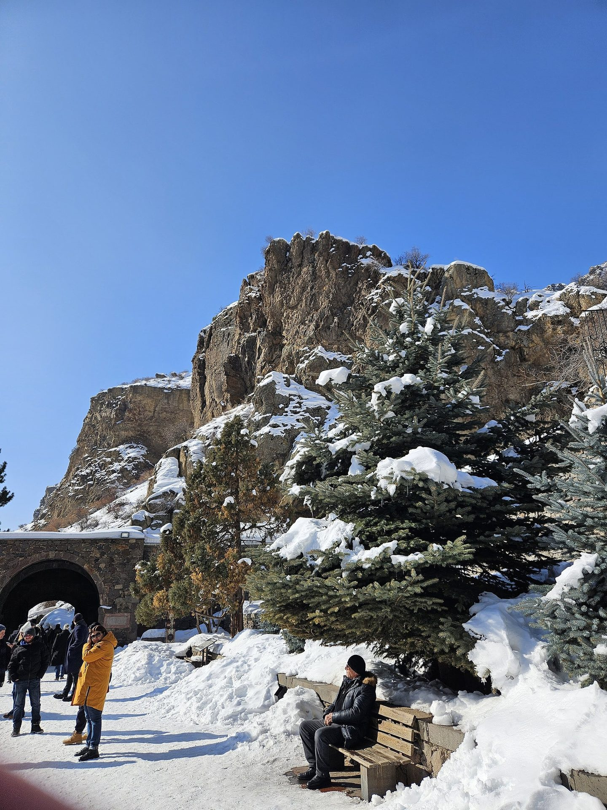
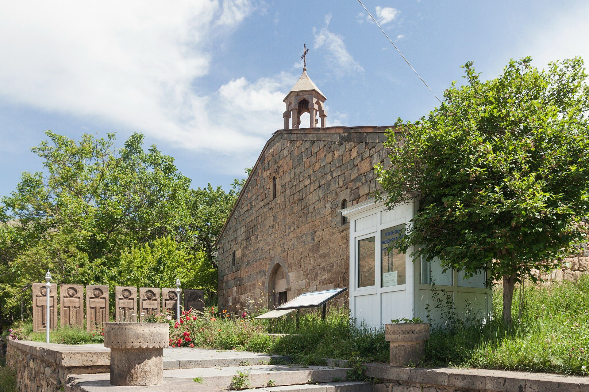
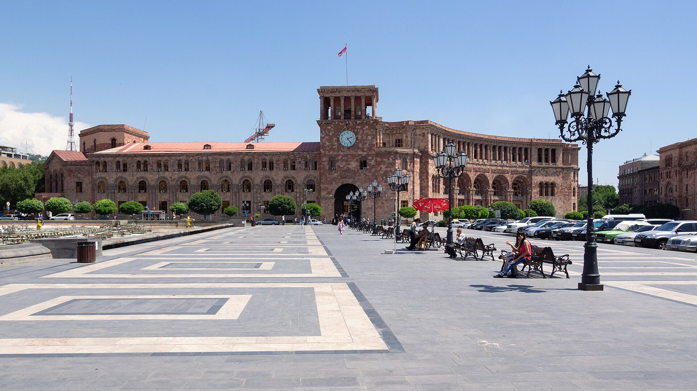
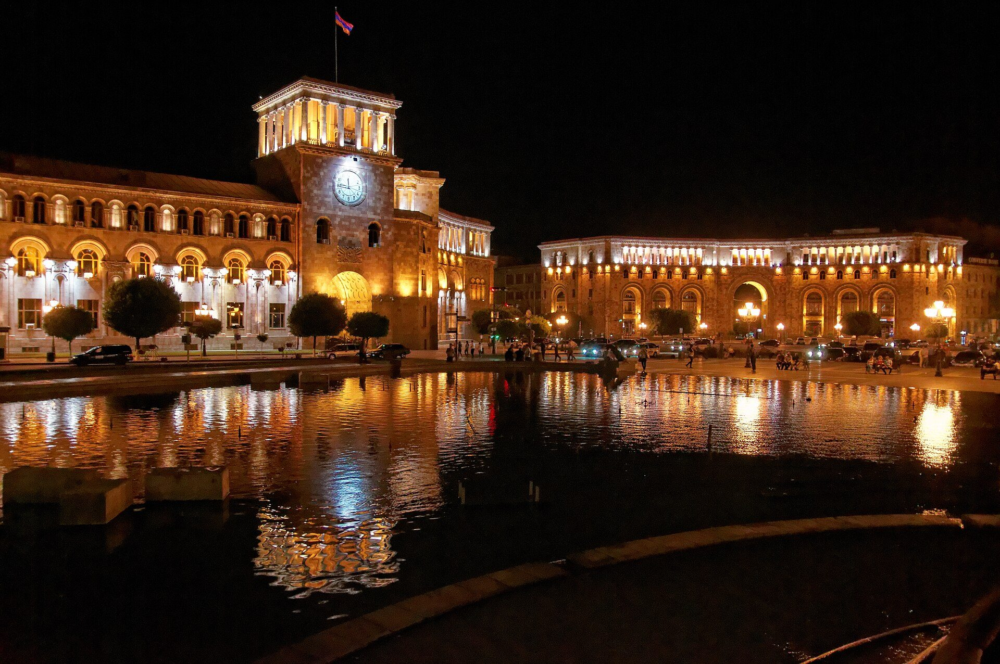
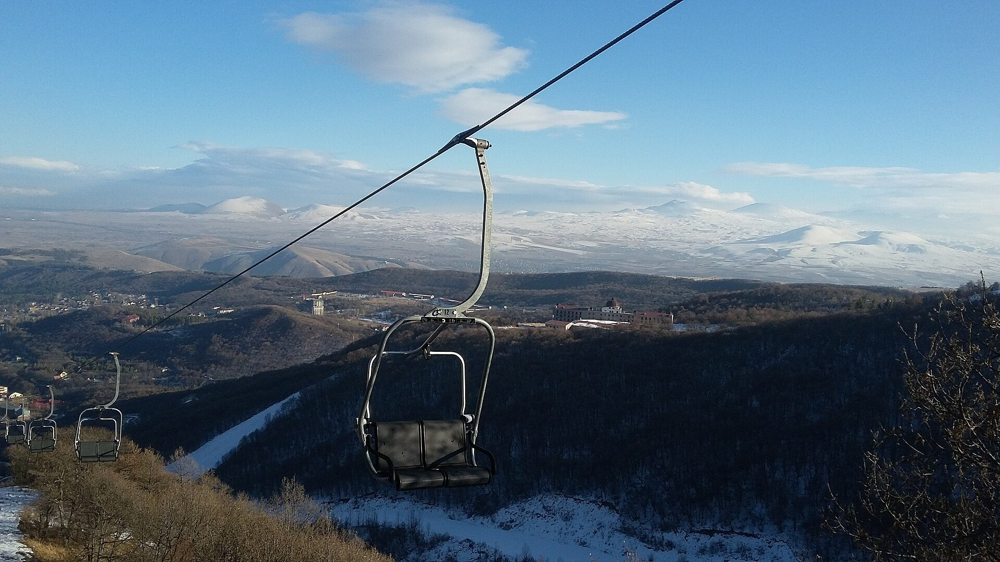

Программа
Прилёт в Ереван
Встреча в международном аэропорту Звартноц и трансфер в отель в Ереване. Заселение и отдых после перелёта.

Обзорная экскурсия по Еревану
Знакомство с армянской столицей: площадь Республики, исторический центр и главные достопримечательности «розового города».


Гарни, Гегард и Симфония камней
Языческий храм Гарни — единственный сохранившийся греко-римский храм в регионе, монастырь Гегард, частично высеченный в скале и включённый в список ЮНЕСКО, и гигантские базальтовые столбы Симфонии камней.


Звартноц, Арени и Гладзор
Руины храма Звартноц VII века — объекта Всемирного наследия ЮНЕСКО, дегустация вина на винзаводе в Арени и музей средневекового Гладзорского университета в селе Вернашен.

Цахкадзор и Севанаванк
Подъём на канатной дороге Цахкадзора с панорамными видами на горы, монастырь Севанаванк на полуострове озера Севан и ужин у озера.
Ужин на Севане в стоимость тура не входит. Канатная дорога работает при благоприятной погоде.


Гюмри
Экскурсия по Гюмри — второму городу Армении: площадь Вардананц с церковью Святого Аменапркича, исторический район Кумайри с архитектурой XIX века и Черная крепость.


Отъезд
Выселение из отеля и трансфер в международный аэропорт Звартноц. Счастливого пути!